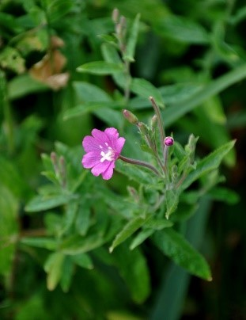
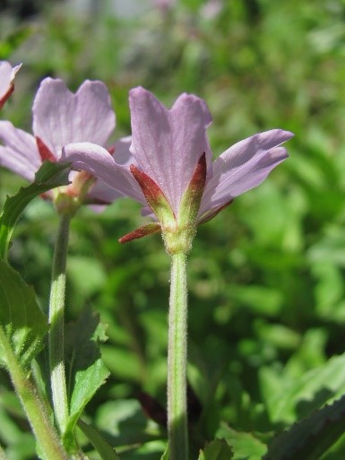

|
Многолетнее травянистое растение высотой 50—150 (до 200) см. Корневище толстое, ползучее; на вертикальных и горизонтальных
корнях развиваются многочисленные дополнительные почки, которые способствуют быстрому вегетативному размножению. Стебель прямостоячий,
округлый, простой, голый, густо облиственный. Листья очерёдные, сидячие, иногда с очень короткими черешками, простые, линейно-ланцетные,
заострённые, к основанию клиновидно суженные. Цветки с двойным околоцветником, четырёхчленные, обоеполые, диаметром 2,5—3 см,
собраны в редкую верхушечную кисть длиной 10—45 см, бледно-розовые, реже белые. Нектарное кольцо расположено вокруг столбика.
Цветёт с начала второй половины лета в течение 30—35 дней.
Фотограф: Юлия Райская |

Многолетнее растение 50—180 см выс. С толстым корневищем, снабженным мутовками корневых мочек и чешуйчатыми бурыми листьями у основания
надземного стебля; Стебель цилиндрический, прямостоящий, ветвистый, опушенный, как и все растение, 2 видами волосков длинными мягкими
отстоящими и густыми, короткими железистыми; Листья, кроме самых верхних, супротивные, сидячие, стеблеобъемлющие, немного низбегающие,
продолговато-ланцетные, по краям мелко пильчато-зубчатые, с крючковато-загнутыми туповатыми зубчиками, с обеих сторон отстояще волосистые;
Венчик пурпурово-фиолетовый, крупный; Цветет в июне - августе.Растет на заливных лугах, болотах, по берегам рек и озер,
в тростниковых зарослях, у ключей, по северным склонам низкогорий.
Фотограф: Марина Скотникова |
|
Многолетнее раст. до 80 см выс.; возобновление из крупных мясистых 4-гранных почек или иногда из коротколистных розеток,
закладывающихся на старом ст. близ поверхности почвы. Ст. почти донизу кругом опушенный нежелезистыми серповидными волосками,
в соцв. обычно с примесью железистых. Средн. ст. л. с чер. 1—2 (3) мм дл., в основании округлые или несколько сердцевидные,
в общем очертании яйцевидные или ланцетные, острые, по краям пильчато-зубчатые, 3—7.5 см дл., до 4 см шир. Зав. и чаш.
со смешанным (железистым и нежелезистым) опушением; чаш. до 7 мм дл., весь цв. до 10 мм дл. Р-це 4-лопастное, с расходящимися лоп.
Семена 1.1 —1.4 мм дл., яйцевидные, обычно на обоих концах тупые, с мелкобугорчатой поверхностью.
Фотограф: Олег Семин |

Многолетнее растение. Т акое же распространение и экологию, как и кипрей четырехгранный, отличается только более широкими,
по краям обычно опушенными листьями с короткими черешками. Цветки бледно-розовые; лепестки выемчатые, длиной 5–7 мм.
Высота – 30–70 см. С ветвистым стеблем, с четырьмя возвышенными линиями, идущими от приросших супротивных листьев.
Плоды – коробочка длиной до 8 см. Цветет в июле – сентябре; плоды начинают созревать с августа.
Фотограф: Геннадий Окатов |
|
Многолетник высотой 10-70 см с длинными, тонкими надземными побегами, на концах которых осенью образуются луковички.
Стебель неветвистый или разветвленный, цилиндрический, в верхней половине местами мягкоопушенный. Листья супротивные узкие,
от продолговато-ланцетных до линейных, до 10 мм шириной, сидячие, в основании узкоклиновидные, цельнокрайние,
со слегка завернутыми на нижнюю сторону краями, опушенные лишь по жилкам с нижней стороны. Цветки мелкие, образующие концевую кисть или
одиночные пазушные, бутоны поникшие. Лепестков четыре, глубоковыемчатых, ярко-красных, лиловых или белых, длиной 3-8 мм.
Цветет с июня по август. Плод — коробочка четырехгранная, по граням волосисто-опушенная.
Фотограф: Анатолий Руденко |
Многолетнее растение. Цветки бледно-розовые; лепестки выемчатые, длиной 5–7 мм. Высота – 30–70 см. С ветвистым стеблем,
с четырьмя возвышенными линиями, идущими от приросших супротивных листьев. Плоды – коробочка длиной до 8 см. Цветет в июле – сентябре;
плоды начинают созревать с августа.
Фотограф: Андрей Любченко |
|
Двулетнее стройное травянистое растение высотой 50-150 см. Гемикриптофит. Стебель прямостоячий, граненый, опушенный, железистый,
неветвистый или вверху разветвленный. Нижние листья образуют прикорневую листовую розетку; они продолговато-обратнояйцевидные,
тупозаостренные, цельнокрайние или выемчатозубчатые, сужающиеся в черешок; стеблевые листья очередные, продолговатые или
продолговато-сердцевидные, мелкозубчатые или почти цельнокрайние, опушенные. Цветки образуют кистевидное соцветие с листовидными
прицветниками; чашелистики ланцетные, отогнутые назад; лепестки светло-желтые, обратносердцевидные, выемчатые. Цветет с июня по август.
Плод — линейно-продолговатая, 4-гранная войлочно-опушенная коробочка. Растет на песчаных почвах, по берегам рек и на речных террасах,
насыпях, в каменоломнях и других сорных местах.
Фотограф: Марина Скотникова |